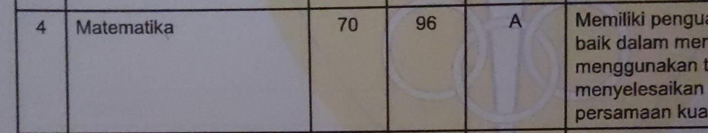
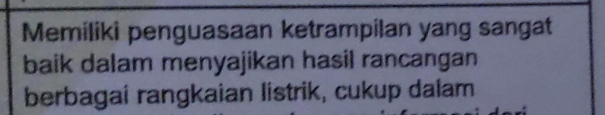

RANGKING TIDAK MENENTUKAN MASA DEPANAlasan Pendidikan di indoensia itu sampah SKILL KERJA LEBIH PENTING DARIPADA AKADEMIK |
DAN JUGA APA KALIAN TAHU BAHWA, ELON MUSK ORANG TERKAYA DI DUNIA ITU,BUKANLAH ANAK YANG PALING PINTAR DI SEKOLAHNYA, DIA ADALAH MURID DIATAS RATA RATA YANG NILAI PALING BAGUSNYA BERADA DI DAERAH MATEMATIKA DAN FISIKA.DAN SAAT DITANYA KEPADA TEMAN ELON SAAT DIA SEKOLAH.ADA 5-6 ORANG YANG PINTAR DI SEKOLAHNYA ELON TIDAK TERMASUK SALAH SATU DARI MEREKA. JADI OLEH KARENA ITULAH.
NILAI MAT DAN FISIKA CICI :
 